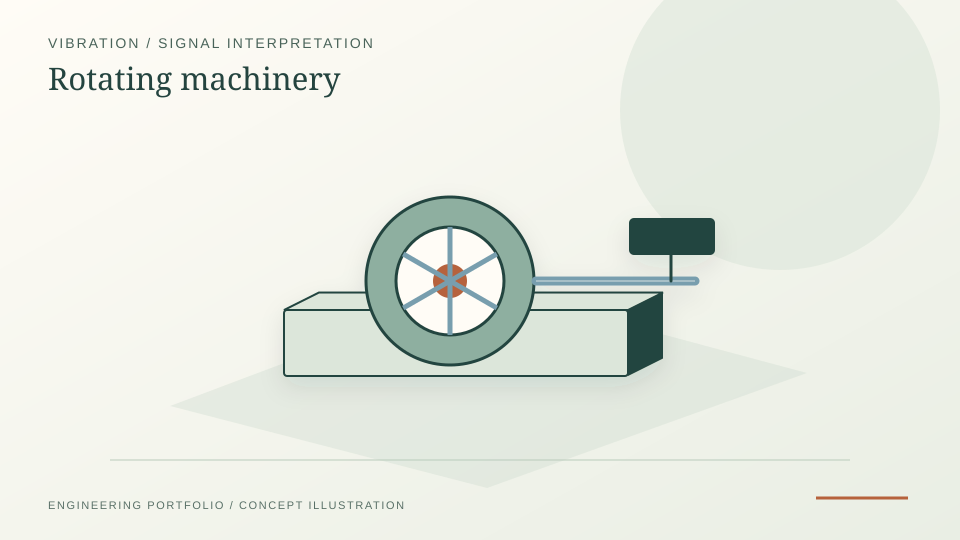

Compares operating points through frequency fingerprints and RMS metrics.
Vibration · FFT/PSD · Python reports
Rotating Machinery Vibration Mini-Lab
A one-day vibration workflow using phone accelerometer data as a low-cost proxy for rotating-machinery diagnostics.
PythonFFTPSDHTML reports

PROJECT REFERENCE / ROTATING-MACHINERY-VIBRATION-MINILABPackages outputs as HTML reports, plots and summary CSVs.
What I built
- Designed a reproducible mini-lab workflow for collecting and comparing vibration data at different operating points.
- Implemented filtering, rolling RMS, FFT/PSD overlays and spectrogram generation.
- Packaged results into a plain-English HTML report and spreadsheet-friendly summary metrics.
- Documented limitations around sampling frequency, aliasing and industrial sensor differences.
Method
From phone accelerometer to FFT/PSD
- Sensor mount: phone fixed rigidly to the housing of a small rotating device (PC fan, drill). Phyphox records 3-axis acceleration at f_s ≈ 100 Hz (Nyquist 50 Hz, sufficient for low-RPM screening).
- Data acquisition: capture 60–120 s windows at three operating points (idle, nominal, loaded). Export to CSV with timestamps.
- Pre-processing: mean-removal, optional high-pass at 2 Hz to reject postural drift, then a Hann window before FFT.
- Spectra: Welch PSD with 50 % overlap and 4096-point segments. Identify the rotational fundamental f_r = RPM/60 and its first 5 harmonics.
- Spectrograms: 256-sample STFT to show whether spectral content drifts during a run (a soft proxy for unbalance development or thermal-growth effects).
- Report: bundled HTML with overlays of the three operating points, harmonic table and engineering commentary on what the spectral shape means.
Outputs
What the mini-lab produces
- time_traces.png — three-axis acceleration vs. time for each operating point, with RMS envelope overlay
- fft_overlay.png — Welch PSD overlay (idle / nominal / loaded) on a log-frequency axis, harmonics marked
- spectrogram_per_run.png — STFT heatmap with rotational fundamental and harmonics annotated
- summary_metrics.csv — RMS, peak, crest factor, dominant frequency, harmonic ratios per run
- report.html — single-file deliverable with charts, tables and an engineering note on aliasing risk and what a real industrial accelerometer (4–10 kHz BW) would add
Limitations
What a phone sensor cannot do
- Bandwidth: phone IMUs are typically 100 Hz; bearing-fault frequencies (BPFO/BPFI) for industrial machinery sit at 5–20 kHz and are completely missed.
- Aliasing: any spectral content above 50 Hz folds back into the captured band — interpretations above 30 Hz should be treated as unreliable.
- Calibration: no traceable mV/g reference — amplitudes are relative, not engineering-unit-correct.
- Mounting: housing-coupled, not directly on the bearing — high-frequency transmission path is heavily attenuated.
- The workflow is therefore a SCREENING tool for shape/trending, not a condition-monitoring system. The portfolio explicitly flags this.
Relevance
Why this matters
This project demonstrates practical signal-processing judgement: turning raw sensor data into interpretable frequency fingerprints while clearly communicating measurement-chain limitations. The same RMS → FFT → harmonics → spectrogram pipeline transfers directly to NI-DAQ/LabVIEW data from the Siemens thesis rig, with the added rigor of calibrated industrial sensors.